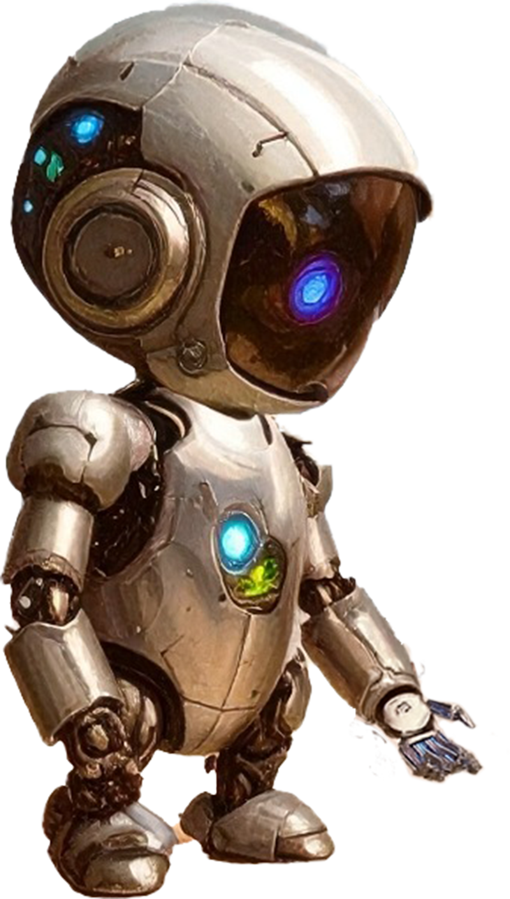
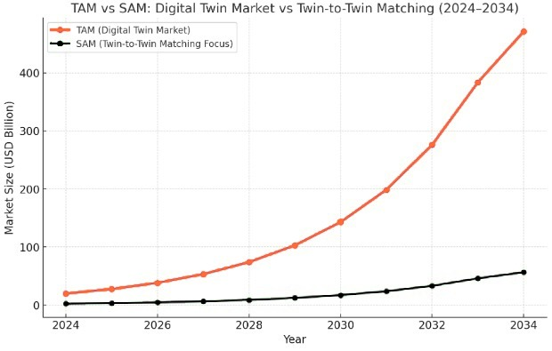

The Future of AI: Twin-to-Twin Matching
Where your AI twin finds the perfect connections before you even know you need them
Will Soon Open For Demo
Where your AI twin finds the perfect connections before you even know you need them
Will Soon Open For Demo
Our AI twin learns your personality, preferences and goals.
Through Twin-to-Twin matching, it connects with other Twins to discover your ideal matches.
By interacting on your behalf, your AI Twin saves you time and effort while unlocking meaningful connections.
AI twins handle human matching complexity so you focus on meaningful connections.
Match students with mentors and study partners based on learning styles.
Connect job seekers with ideal companies and employers with perfect candidates.
Match patients with doctors and treatments based on history and preferences.
Find the right investors, partners, and collaborators efficiently.
Smart matchmaking for truly compatible partners.
Create communities and support groups based on shared experiences.
Build your AI twin using your data and preferences
Your twin talks to other twins to find compatibility
Receive only the most relevant, high-quality connections
AI-driven matchmaking and networking is a multi-billion-dollar opportunity worldwide.

TAM – Global Digital Twin Market (2024-2034)
The global digital twin market is projected to grow exponentially, driven by AI, IoT, and personalized virtual experiences, representing a multi-billion-dollar opportunity.
SAM – Personal & Social Twin Matching Market (2024-2034)
This niche market is expanding as users increasingly seek AI-powered social connections and networking platforms, offering strong growth potential.
Be the first to experience AI twin matching.